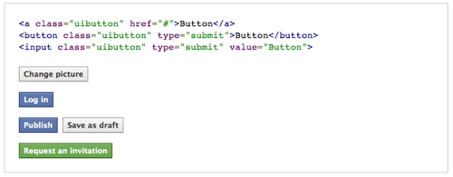

Make people think that your site is as good as Facebook.
Its a CSS 3 designed template that makes all of your HTML buttons look like Facebook buttons. Not quite bootcamp for Facebook, but the buttons certainly look good.
Get it on Github